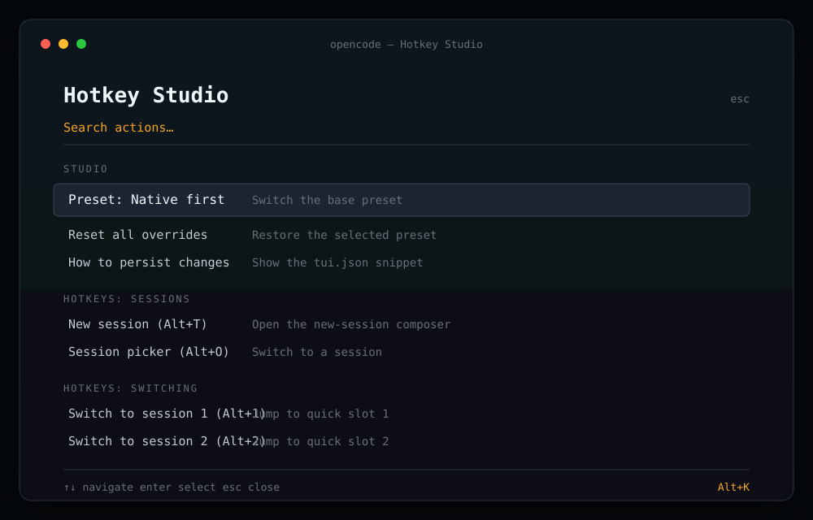

Tabs that act like tabs
Alt+Enter opens a draft. Alt+1…9 jumps straight to an open tab. Alt+PageUp/Down cycles without a trip to the tab strip.
v1.0.0 · OpenCode Desktop · tested on 1.19.3
A native keybind layer for OpenCode Desktop. Open tabs, jump between them, search every session, and reach settings without breaking flow.
Desktop surface
OpenCode Desktop gets the browser layer. The terminal edition keeps the full Hotkey Studio. The install and the mental model stay separate, so neither one pretends to be the other.
Alt+Enter opens a draft. Alt+1…9 jumps straight to an open tab. Alt+PageUp/Down cycles without a trip to the tab strip.
Persian and Arabic layouts change what letter keys produce. The primary bindings use digits, navigation keys, and punctuation, so they keep working.
The installer merges native command ids into OpenCode's own settings, writes a backup, and gives you a one-command undo.
--doctor reports installed, missing, customized, and duplicate
bindings. Add --json when you want machine-readable output.
List them with --backups, restore one by name, or keep the newest
--prune N and delete the rest.
--diff previews old and new bindings without writing.
--keep-custom leaves the keys you edited yourself untouched.
The keymap
Install these as a set, or pick the ones you want from Settings → Shortcuts. The Latin-letter and native OpenCode defaults are kept as additional bindings.
| Action | Primary | Also works |
|---|---|---|
| New tab | Alt+Enter | Alt+T·Mod+T·Mod+N |
| Switch to tab 1…9 | Alt+1…9 | Mod+1…9 |
| Previous tab | Alt+PageUp | Alt+Home·Ctrl+Shift+Tab |
| Next tab | Alt+PageDown | Alt+End·Ctrl+Tab |
| Search files, commands, sessions | Alt+/ | Alt+O·Mod+P |
| Open Settings | Alt+. | Alt+K·Mod+, |
| Close current tab | Mod+W | Native default |
| Reopen closed tab | Mod+Shift+T | Native default |
| Previous / next session | Alt+↑/↓ | Native default |
Alt+1…9 moves between tabs that are already open. To reach any session, use Alt+/ and choose it from the search palette.
The desktop matcher compares the character a key produces, not its physical position. On a Persian layout, Alt+T produces a Persian character, so the primary set uses digits, arrows, and punctuation.
Option+letter and Option+digit can insert special characters on macOS. Use Cmd+1…9, Cmd+T, Cmd+P, and Cmd+, instead; the installer writes both sets.
Install
The installer uses Node's standard library only. It finds the desktop settings file, backs it up, and merges 14 keybinds without touching anything else.
Use the one-liner or clone the repository. There is no npm install step.
OpenCode Desktop reads its keybinds at startup. The installer never closes the app for you.
You should get a new draft tab. Use Alt+1…9 to move between open tabs.
$ curl -fsSL https://raw.githubusercontent.com/NarimanKhaleghi/opencode-hotkeys/main/install-desktop.sh | sh
PS> irm https://raw.githubusercontent.com/NarimanKhaleghi/opencode-hotkeys/main/install-desktop.ps1 -OutFile "$env:TEMP\opencode-hotkeys.ps1" PS> powershell -ExecutionPolicy Bypass -File "$env:TEMP\opencode-hotkeys.ps1"
The installer writes the app's own settings file. Quit the app before uninstalling on Windows. Every write creates a timestamped backup.
For a manual file edit, parse the JSON string stored at settings.v3 and merge these entries into its keybinds object:
{
"tab.new": "alt+enter,alt+t,mod+t,mod+n",
"tab.1": "alt+1,mod+1",
"tab.2": "alt+2,mod+2",
"tab.3": "alt+3,mod+3",
"tab.4": "alt+4,mod+4",
"tab.5": "alt+5,mod+5",
"tab.6": "alt+6,mod+6",
"tab.7": "alt+7,mod+7",
"tab.8": "alt+8,mod+8",
"tab.9": "alt+9,mod+9",
"tab.prev": "alt+pageup,alt+home,mod+option+arrowleft,ctrl+shift+tab",
"tab.next": "alt+pagedown,alt+end,mod+option+arrowright,ctrl+tab",
"file.open": "alt+/,alt+o,mod+p",
"settings.open": "alt+.,alt+k,mod+comma"
}
On Linux and macOS, mod means Ctrl. On macOS it means Cmd. The desktop app accepts comma-separated alternatives for one action.
Under the hood
No injection, no wrapper, no service. The installer reads the same settings file the app uses and writes it back atomically.
Checks the standard Linux, macOS, and Windows paths, plus OPENCODE_DESKTOP_CONFIG.
The app stores a JSON string inside default.dat. Only its keybinds object is touched.
Existing bindings, including your own, stay in place. Managed entries are replaced.
A timestamped backup is created before an atomic rename. Undo is one command.
Limits
The desktop layer is deliberately narrow. Knowing the edges makes the shortcuts easier to trust.
Shortcuts work while OpenCode Desktop is focused. There is no global listener or background process.
The desktop app does not load TUI plugins. Hotkey Studio stays in the terminal edition; the desktop uses native Settings → Shortcuts.
Alt+1…9 only reaches tabs that are open. Alt+/ searches the full session list and is the better everyday jump.
The bindings target built-in command ids. A future app update can change one; run --check after updating and reinstall if needed.
Terminal edition
For preset switching, quick session slots, and a full rebinding UI, use the terminal edition. It is a separate plugin with its own install.

Questions
Short answers about layout, undo, updates, and what the desktop app can and cannot load.
Your layout is producing non-Latin characters for letter keys. Use Alt+Enter, Alt+PageUp/Down, Alt+/, and Alt+. — the installer leads with those stable keys. Alt+T, Alt+O, and Alt+K remain for Latin layouts.
Yes. The installer detects all three platforms and writes both Alt and Cmd/Mod bindings. On macOS, Option+letter may type special characters, so the reliable set is Cmd+1…9, Cmd+T, Cmd+P, and Cmd+,. On Windows, quit OpenCode Desktop before installing so the settings file is not locked.
No. It only edits the app's own keybind settings. There is no fork, no injected script, and no background process.
Run desktop/install.mjs --uninstall, or restore the newest backup with --restore latest. The installer prints the backup path after every write.
No. The desktop installer has no npm dependencies. You need Node.js 20+ to run it, or you can edit the app's shortcuts from the native Settings window.
Your settings file survives app updates. A future release can rename a built-in command, so run --check after a major update and reinstall if a binding is reported missing.
No. These are app shortcuts, not global hotkeys. The OpenCode Desktop window must be focused.